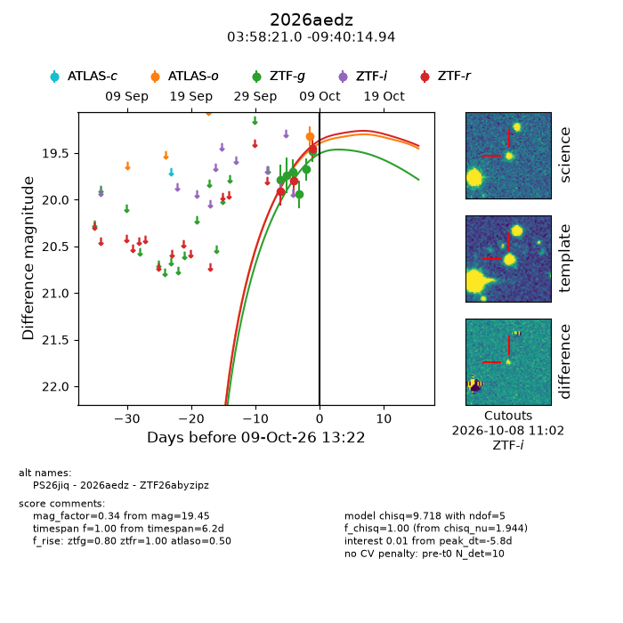
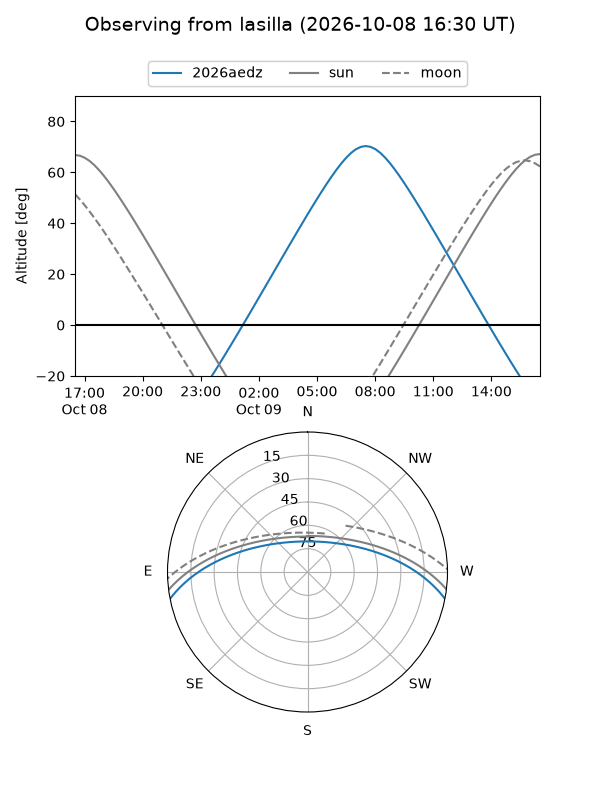
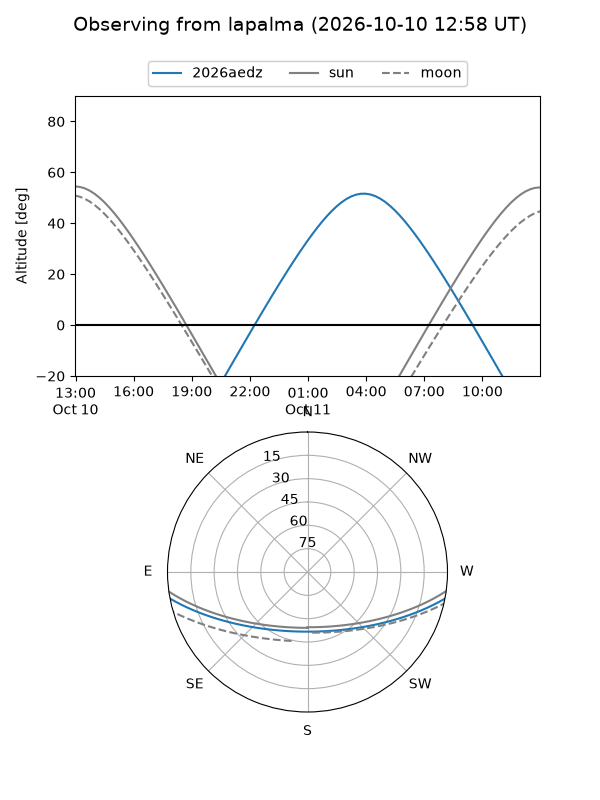
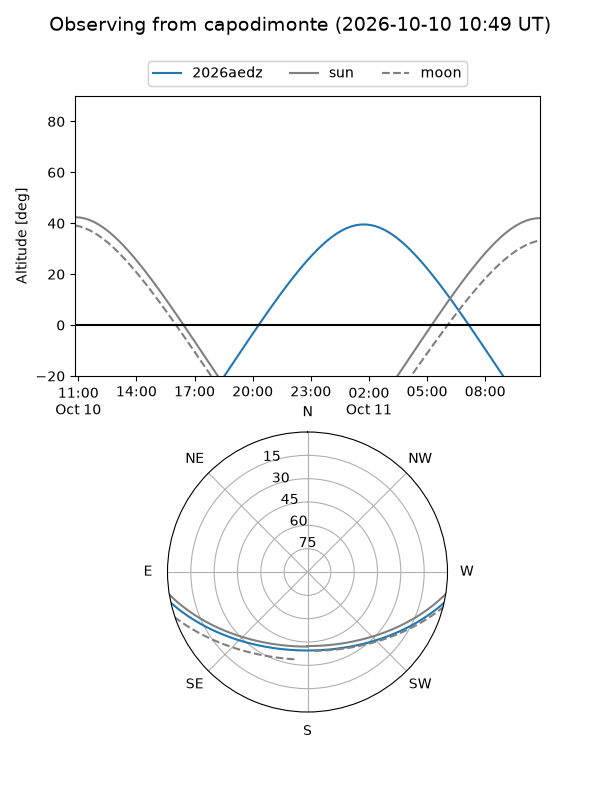
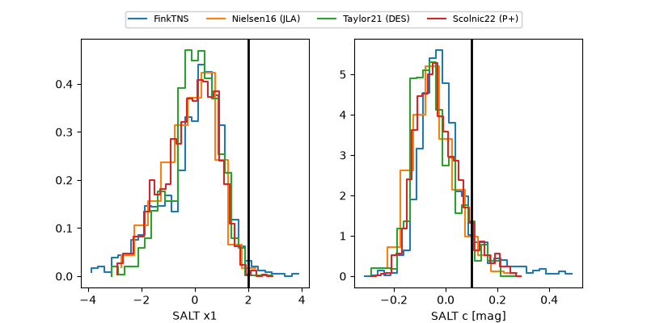

2026aedz
Target 2026aedz at 2026-10-09 13:25
Aliases and brokers:
FINK-ZTF: ztf.fink-portal.org/ZTF26abyzipz
Lasair-ZTF: lasair-ztf.lsst.ac.uk/objects/ZTF26abyzipz
ALeRCE-ZTF: alerce.online/object/ZTF26abyzipz
YSE-PZ: ziggy.ucolick.org/yse/transient_detail/2026aedz
TNS name: wis-tns.org/object/2026aedz
Direct TNS query: direct search
alt names
ZTF26abyzipz (ztf,fink_ztf)
2026aedz (tns,yse)
PS26jiq (panstarrs)
Coordinates:
equatorial (ra, dec) = 59.5876,-9.67082
equatorial (HMS+DMS) = 03:58:21.02,-09:40:14.94
galactic (l, b) = (200.4710,-42.68618)
Flags:
peak dt: -5.8
Photometry:
last atlaso=19.32, ztfg=19.49, ztfr=19.45
1 atlaso, 6 ztfg, 3 ztfr detections
Lightcurve

Visibility



Additional plots
